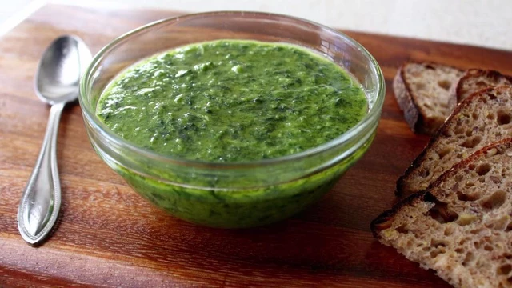

Pesto Sauce

Description
Making basil pesto is a simple procedure.
There's not much prep work involved.
Ingredients
- A few cups of packed fresh basil
- 3 or 4 peeled cloves of garlic
- Freshly grated Parmesan cheese
- Extra-virgin olive oil
- Pine nuts
Steps
- Blend together the basil, nuts, garlic and cheese.
- Slowly pour in the olive oil while mixing.
- At the end, add salt and pepper to taste.